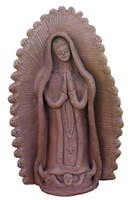
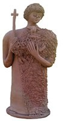
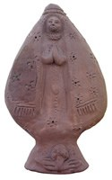
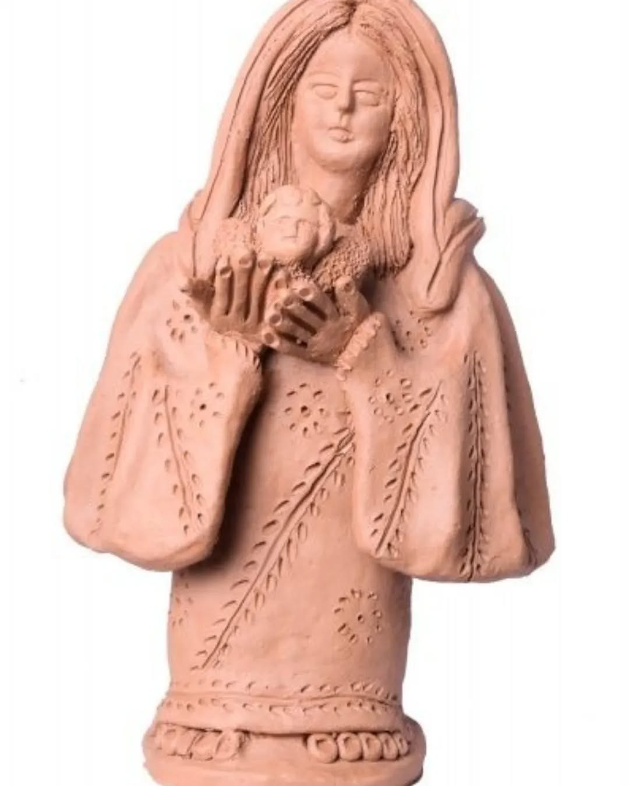
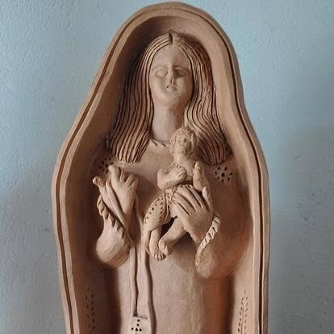

Mestra Maria Amélia da Silva
A força santeira de Tracunhaém, moldada desde a infância.
Maria Amélia da Silva é uma das grandes mestras de Tracunhaém, reconhecida por santos católicos de rostos expressivos, roupas detalhadas e devoção materializada no barro.
Maria Amélia da Silva nasceu em Tracunhaém, em 1925, e consolidou-se como uma das grandes artistas pernambucanas da cerâmica santeira.
Começou a colocar as mãos no barro aos oito anos, aprendendo com o pai, João Bezerra da Silva, o Mestre Dunde. O que parecia obrigação de infância tornou-se caminho de vida.
Sua obra é ligada à arte santeira de Pernambuco: santos católicos com rostos expressivos, roupas detalhadas e forte devoção. O ofício também foi transmitido ao filho e ao neto, mantendo viva a linhagem familiar do barro.
Na devoção de seus santos, o barro vira presença.
Para observar na peça
- Rostos expressivos
- Roupas e ornamentos
- Verticalidade das imagens sacras
- Herança familiar do ofício
Materiais e técnica
Galeria de referências de estilo
Imagens públicas reunidas para reconhecer linguagem, materiais e técnica. As peças da exposição são vistas apenas ao vivo.





Fontes e créditos
- Enciclopédia Itaú Cultural — Maria Amélia da Silva https://enciclopedia.itaucultural.org.br/pessoas/21326-maria-amelia-da-silva
- Governo de Pernambuco — Mestra Maria Amélia | Alameda dos Mestres https://www.youtube.com/watch?v=Huh34ke4WDE
- Cultura Popular Brasileira — A Arte da Emoção: Maria Amélia https://www.youtube.com/watch?v=r-EXX9g_9LQ